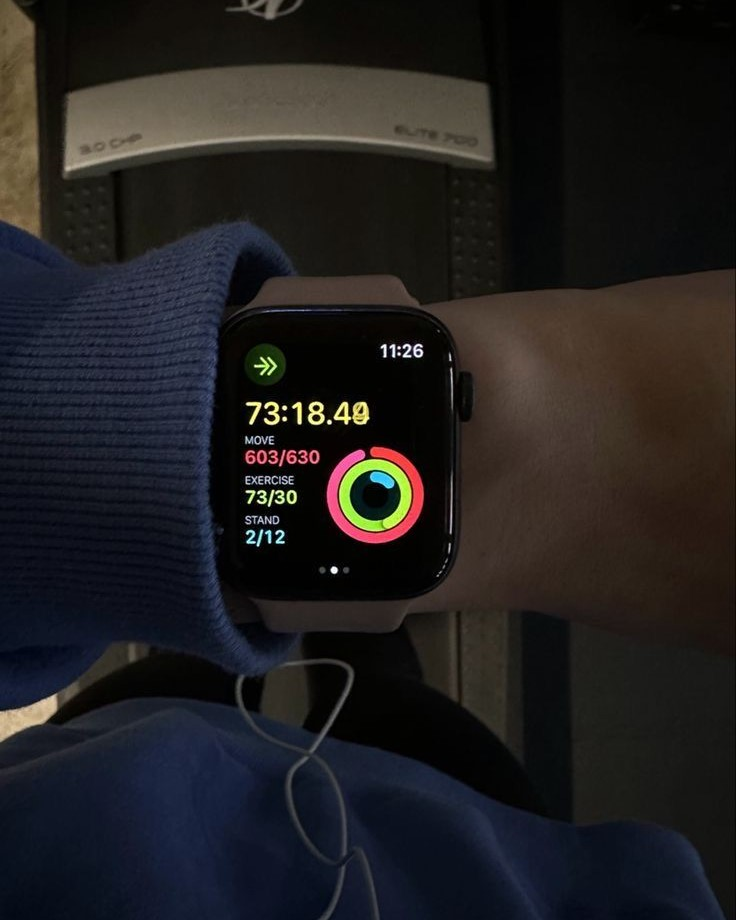
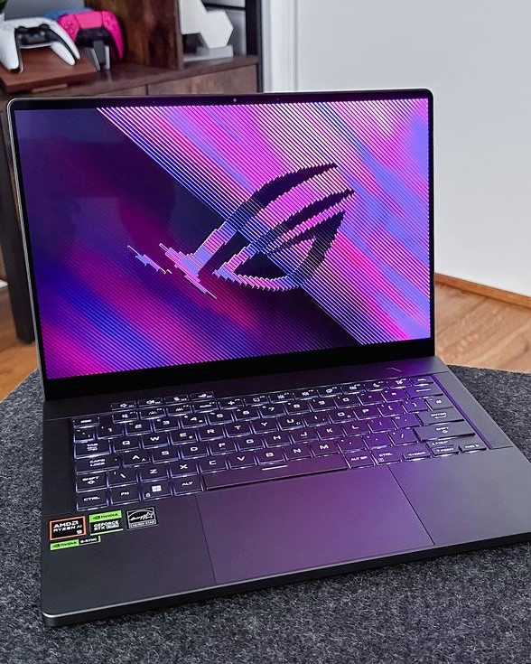
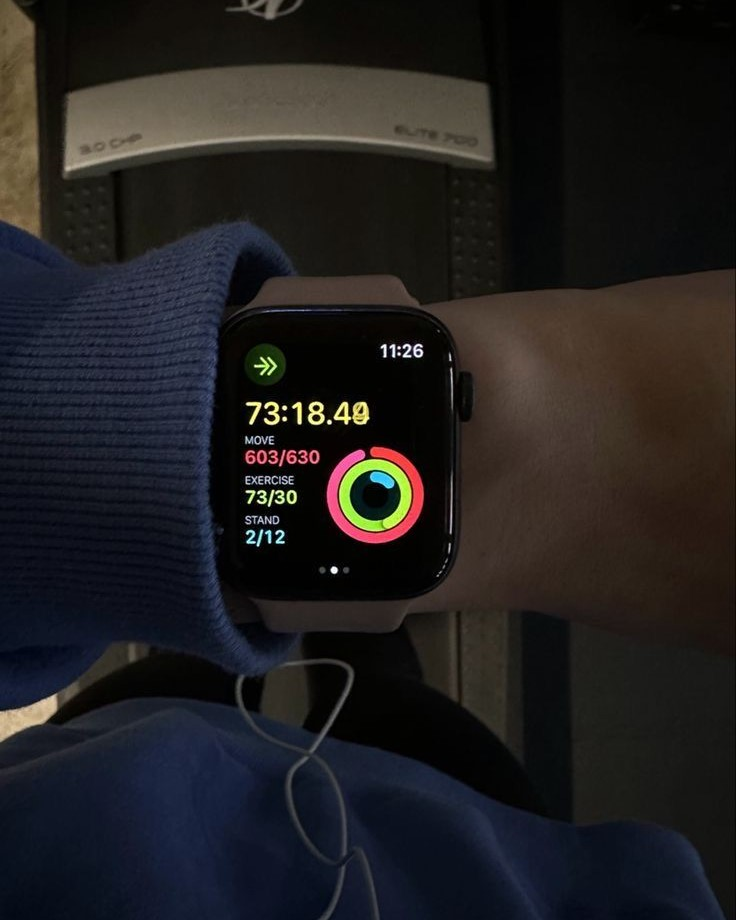
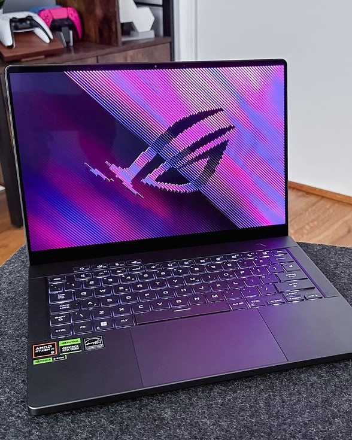

Technology
Overview of Technology
Consumer technology refers to electronic devices and gadgets designed for everyday use by individuals. This
sector has rapidly evolved, offering various products that enhance communication, entertainment,
productivity, and overall lifestyle. Below is an overview of key categories within consumer technology..
Types of Technology
-
Laptops
Description: Portable computers that combine the components of a desktop computer into a single unit,
allowing users to work or play on the go.
Features: Laptops vary in size, performance, and design, with options ranging from ultra-portable models
for basic tasks to powerful gaming laptops equipped with high-end graphics cards.
-
Smartphones
Description: Multifunctional mobile devices that combine a phone with computing capabilities, enabling
internet access, apps, and multimedia.
Features: Modern smartphones offer high-resolution cameras, biometric security (like fingerprint and
facial recognition), and extensive app ecosystems. They often include features like 5G connectivity and
AI-driven functionalities
-
Tablets
Description: Touchscreen devices that bridge the gap between laptops and smartphones, ideal for media
consumption and light productivity tasks.
Features: Tablets come with various operating systems (iOS, Android, Windows) and can support styluses
for note-taking or drawing. They are favored for their portability and ease of use.
-
Headphones
Description: Audio devices worn over or in the ears to listen to music, podcasts, or other audio
content.
Types
- Over-Ear Headphones: Provide immersive sound quality with larger drivers and better noise
isolation.
- On-Ear Headphones: Smaller and more portable than over-ear models but may not provide as much
sound isolation.
- In-Ear Headphones (Earbuds): Compact and convenient for on-the-go use; often come with various
features like noise cancellation.
 


